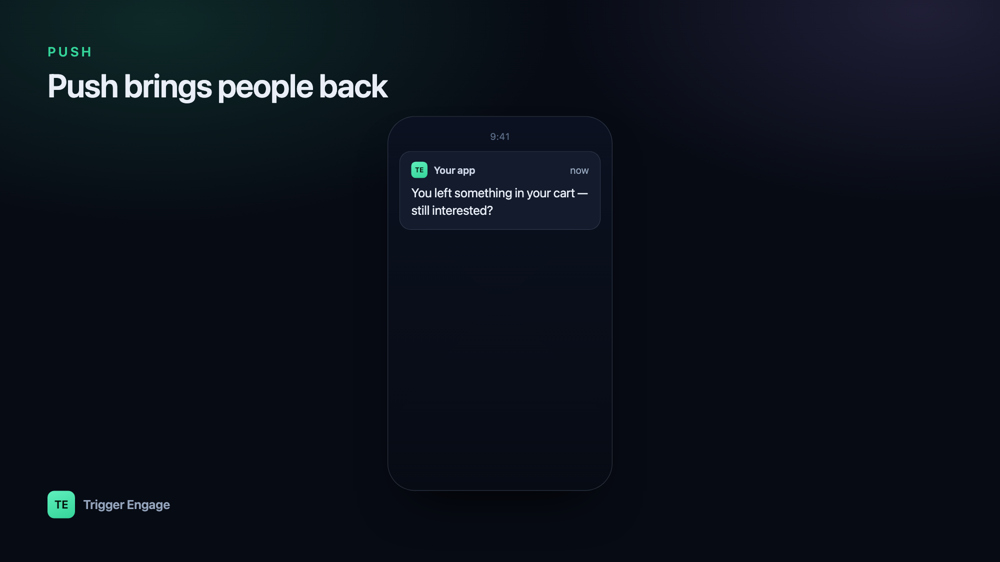

Push notifications pull people back into your app — but only if you send the right one at the right time. Done well, they are the highest-signal channel you have: a tap away from the exact screen a user needs. Done badly, they are the fastest way to earn an uninstall. This guide shows you how to send push notifications in Laravel and, more importantly, how to wire them into automated journeys so each one is timely and relevant instead of noise.

Web push vs mobile push
"Push" covers two different delivery paths, and it helps to keep them straight before you write any code.
Web push runs in the browser. A visitor grants permission, the browser registers a service worker, and you receive a subscription object (an endpoint URL plus encryption keys) that you store server-side. You then POST an encrypted payload to that endpoint, and the browser's push service wakes the service worker to show the notification — even when your tab is closed. It works in Chrome, Firefox, Edge, and (since recent versions) Safari on macOS and iOS for installed web apps.
Mobile push targets native iOS and Android apps. Here the operating system owns delivery: Apple Push Notification service (APNs) for iOS, Firebase Cloud Messaging (FCM) for Android. Each installed app instance hands you a device token, and you send messages to Apple or Google, who deliver to the device.
In both cases your Laravel app never talks to the device directly — it talks to a push service, keyed by a token or subscription you stored against a user. Managing APNs certificates and FCM keys by hand is fiddly, so most teams put a provider in between that abstracts both.
Choose a provider
A push provider manages the parts you do not want to own: device-token storage, APNs/FCM credentials, retries, and delivery reporting. OneSignal is a common choice because it handles iOS, Android, and web push behind one API; you can also talk to FCM and APNs directly if you prefer no middleman.
Whatever you pick, your side of the contract is the same: keep a mapping between your users and their devices. When someone logs in on a phone, you associate that device (or the provider's "player"/subscription id) with the user record. That mapping is what lets you say "notify user 4821" instead of juggling raw tokens.
| Path | Delivery service | What you store |
|---|---|---|
| Web push | Browser push service (via VAPID) | Subscription endpoint + keys |
| iOS | APNs | Device token |
| Android | FCM | Registration token |
| Any (abstracted) | Provider e.g. OneSignal | Player / external user id |
Option A: Laravel notifications with a push channel
Laravel's notification system is the cleanest home for push. You define a Notification class, list a push channel in via(), and build the payload in a to...() method. Queue it so a slow provider call never blocks the request.
use Illuminate\Bus\Queueable;
use Illuminate\Notifications\Notification;
class SessionReminder extends Notification implements ShouldQueue
{
use Queueable;
public function via($notifiable): array
{
return ['onesignal']; // or your custom push channel
}
public function toOneSignal($notifiable)
{
return [
'title' => 'Your session starts soon',
'body' => 'Tap to join — your therapist is ready.',
'url' => 'myapp://session/' . $this->sessionId,
];
}
}Trigger it with $user->notify(new SessionReminder($id)). The channel package reads the user's stored device/player id from a routeNotificationFor...() method on your User model. Keep the payload provider-agnostic — a title, a body, and a deep-link URL are all you truly need — so swapping providers later is a config change, not a rewrite. Store the provider key and app id in config/services.php, never inline.
Option B: call the provider API directly
If you do not want a channel package, or you are targeting a whole segment rather than one user, call the provider's HTTP endpoint yourself with Laravel's Http client.
use Illuminate\Support\Facades\Http;
Http::withToken(config('services.push.key'))
->post('https://provider.example/api/v1/notifications', [
'app_id' => config('services.push.app_id'),
'include_external_ids' => [(string) $user->id],
'headings' => ['en' => 'We saved your spot'],
'contents' => ['en' => 'Finish booking in two taps.'],
]);This is fine for one-off blasts, but notice what it encourages: send calls scattered across controllers and jobs. That gets hard to reason about the moment you add a second channel.
Send push from events (as part of a journey)
The better pattern is to stop calling "send push" from your business logic at all. Instead, fire a single event that describes what happened — session_booked, trial_ending, cart_abandoned — and let a messaging engine decide which channels to use and when. Push then sits alongside email and SMS as one output of the same trigger, instead of a call you have to remember to make.
That is exactly what Trigger Engage does — an open-source, MIT-licensed engine you self-host or embed in Laravel (composer require trigger-engage/server), with a first-party SDK for identifying users and emitting events. Push is delivered through OneSignal, and there is no per-profile fee.
use TriggerEngage\Laravel\TriggerEngage;
TriggerEngage::identify($user->id, [
'email' => $user->email,
'name' => $user->name,
]);
TriggerEngage::event($user->id, 'session_booked', [
'session_id' => $id,
'starts_at' => $startsAt,
]);The SDK is fail-open: if the engine is unreachable, your booking still succeeds — messaging never becomes a hard dependency of your core flow. A journey configured for session_booked might send a confirmation email immediately and a push reminder 30 minutes before the session, with no send logic living in your controller.
Push best practices
Push is a privilege the user grants, and they can revoke it instantly by muting or uninstalling. Protect it.
- Ask permission at the right moment. Never prompt on first load, before the user understands your value. Ask right after a moment that makes notifications obviously useful — after booking, after a first success, after opting into reminders.
- Cap frequency. Set a per-user ceiling and honour quiet hours. A single well-timed push beats five interruptions.
- Deep-link to the relevant screen. A notification that dumps the user on your home screen wastes the tap. Include a URL that lands them exactly where the message points.
- Segment so it is relevant. Send to the users a message actually applies to. Over-notifying drives uninstalls — the exact opposite of what you want when you are trying to reduce churn.
Where push fits in the lifecycle
Push is powerful but narrow: it is short, it is interruptive, and it only reaches users who installed your app and kept notifications on. That makes it a supporting channel, not a standalone strategy. Its real strength shows when it is one instrument in a broader lifecycle sequence — email carries the detail, SMS catches the time-critical moments, and push nudges an engaged user back at just the right second. Think of it as one channel inside your wider marketing automation approach, chosen per message rather than defaulted to. Fire events, let the engine pick the channel, and push earns its place instead of wearing out its welcome.
How do I send push notifications in Laravel?
Notification class with a push channel in via(), or POST to a provider's API with the Http client. Queue the send so a slow provider call never blocks the request, and keep the payload to a title, body, and deep-link URL so you stay provider-agnostic.Web push vs mobile push — what's the difference?
How often should I send push notifications?
Can I send push, email, and SMS from one event?
TriggerEngage::event() once, and a configured journey can send email, SMS, and push (via OneSignal) on whatever schedule you define, with no per-channel logic in your app code.